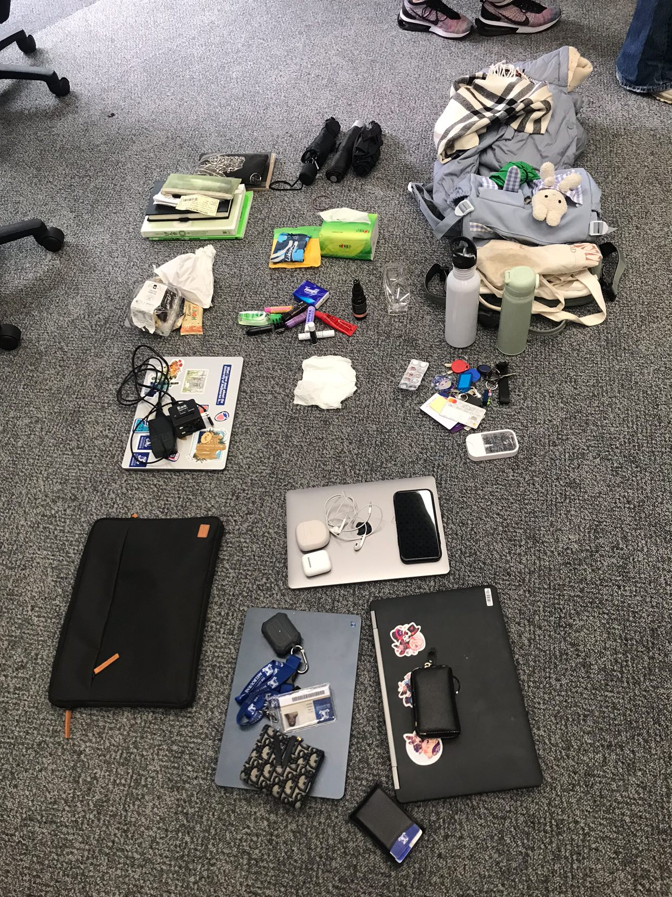

Learning how to collect and organise data. For this exercise, we gathered the numerals for our data from our devices' ability to store information.
We then used the P5.js library to create a pie chart that visually represents the data we collected.
For this Pie Chart, I used the following data:
For this exercise, we were asked to analyse the items that we had in our bags.
By tipping all the content out and presenting it, we had to assign each item a value based on a category of data that they held.
This was done first individually, then in a group.
This was my individual ordering: of the potential each item has to hold information/items. From empty bags, which can contain
a variety of important things: i.e. laptop, keys, wallet, etc. to the items such as water bottles & hand sanitisers, which only hold one thing (liquids).
Afterwards, I was then working with a group who suggested the idea of ordering items based on its relevance to survival whilst on the moon.
We realised really quickly that the issue with such a prompt was that in theory, we had to have the ability to already breathe on the moon.
Additionally, there would be no way to gather more resources for sustaining ourselves physically, i.e. food, as no life grows on the moon.
Therefore, we could only order things in a manner which would help us to survive in the short term, as we would eventually run out of resources.
The results are as such: Any electronics, or forms of currency, would ultimately prove to be useless after its battery life runs out.
Even if we could use the wiring to make a "fire", there is no oxygen available in the environment to do so. However, items such as keys and umbrellas
could be used as tools for digging up the earth or creating structures that would provide shelter from any rocky showers or sunlight.
Class on Tuesday for those that could attend - I unfortunately wasn't able to, so here are some Week 6 notes to fill up the space instead.
LAN/MAN/WAN
L: Location
A: Alphabetically
T: Time
C: Category
H: Hierachy
For sorting data
Movie Barcodes
Week 8 make-up class!!
Matilda has week 5& 6 resources that helps link vs to p5
Add gifs and custom cursors
List of Website's Final Features: